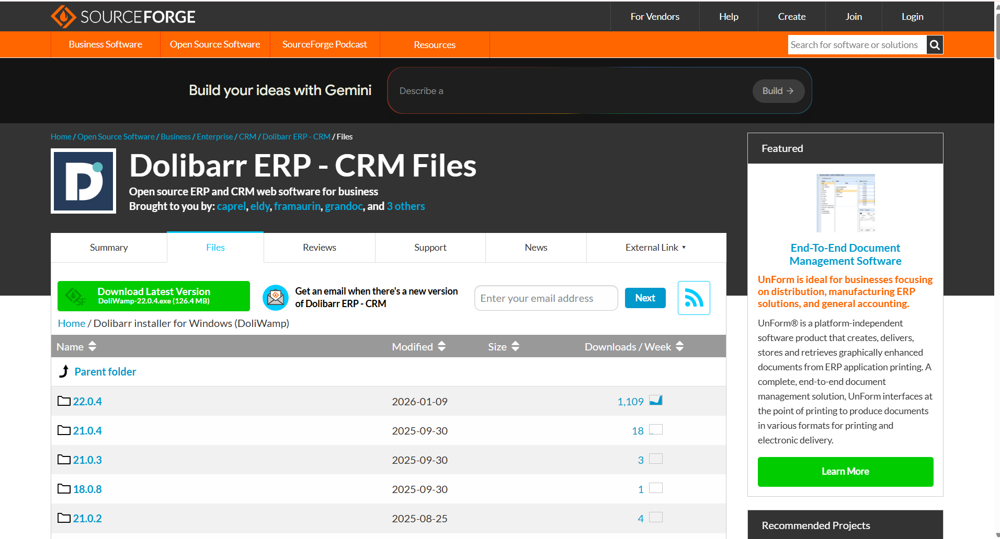
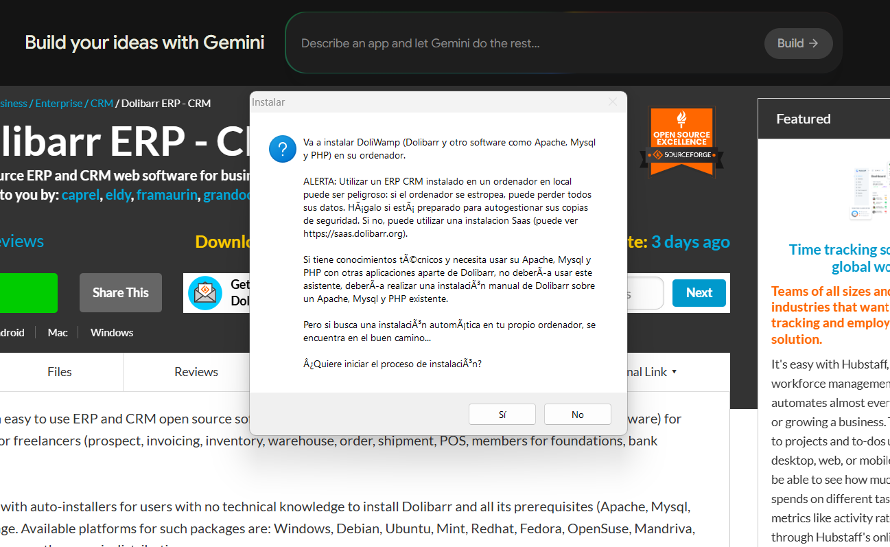
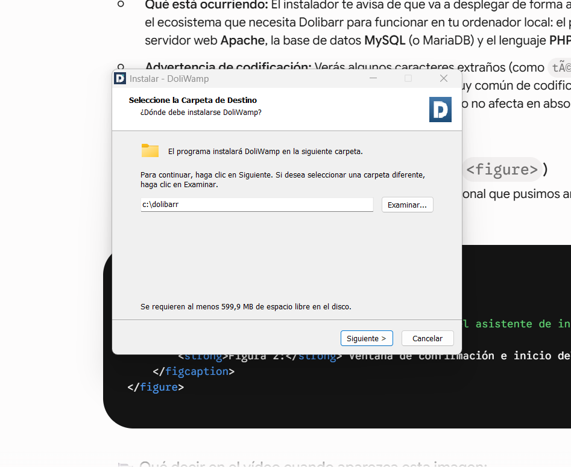
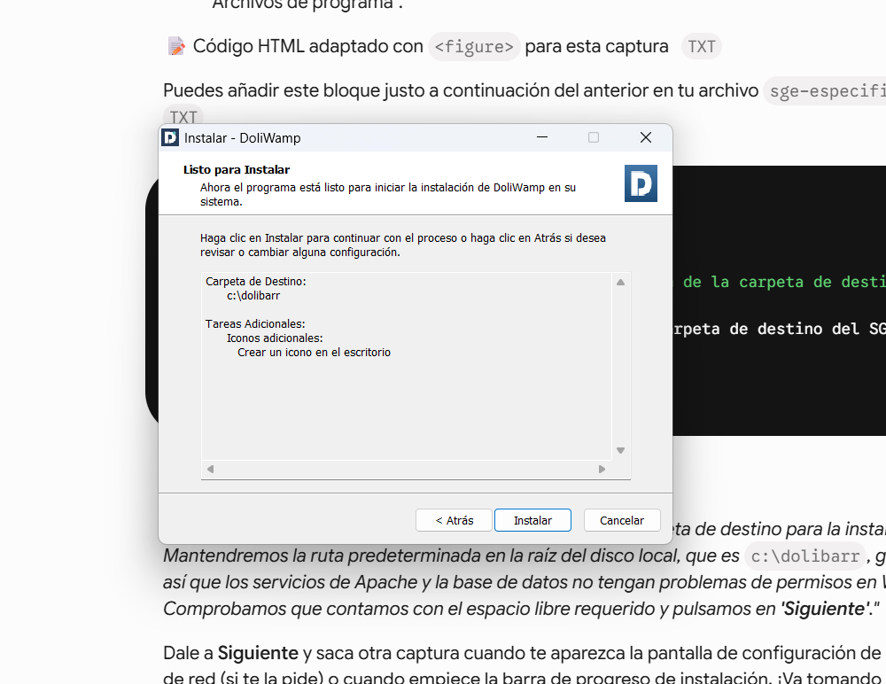
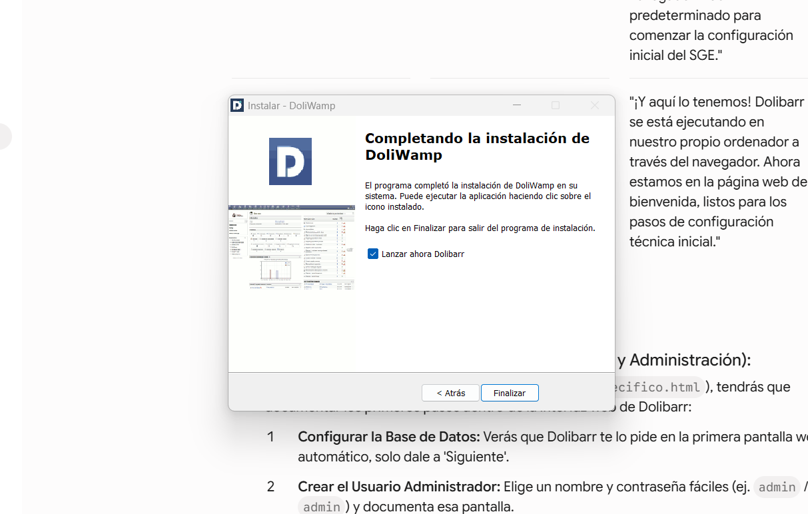
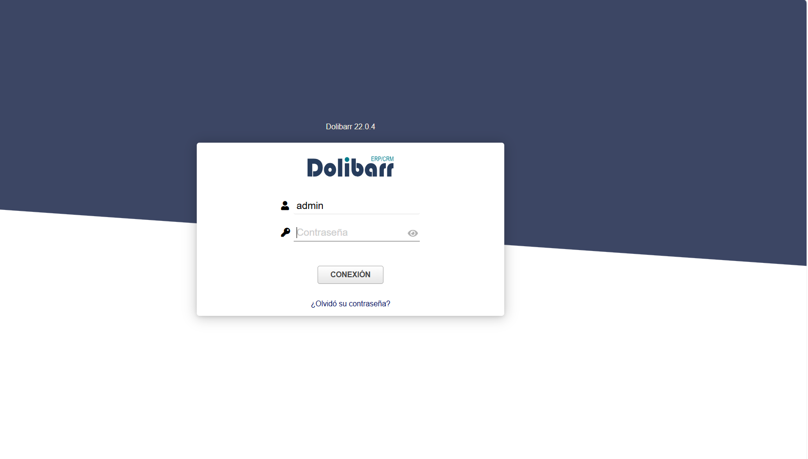

Aquí voy a documentar la instalación de Dolibarr, un SGE ligero y de código abierto para PYMEs

Paso 1: Para comenzar, debemos descargar el instalador 'DoliWamp' desde el sitio oficial. Este paquete 'todo en uno' nos facilitará muchísimo la tarea al instalar Apache, MariaDB y Dolibarr de una sola vez.

Paso 2: Una vez descargado, ejecutamos el archivo .exe. Nos aparece la ventana de bienvenida del asistente de instalación. Este proceso es sencillo, casi todo 'Siguiente, Siguiente'.

Paso 3: Aquí seleccionamos la carpeta donde queremos que se instale Dolibarr

Paso 4: El asistente comienza a copiar todos los archivos del sistema a nuestro disco duro y a configurar los servicios necesarios. Esta fase puede tardar unos minutos.

Paso 5: La instalación básica de DoliWamp ha finalizado con éxito. Al pulsar Finalizar, el instalador abrirá automáticamente nuestro navegador web predeterminado para comenzar la configuración inicial del SGE.

Paso 6: Dolibarr se está ejecutando en nuestro propio ordenador a través del navegador. Ahora estamos en la página web de bienvenida, listos para introducir los datos de usuario que previamente habremos completado.